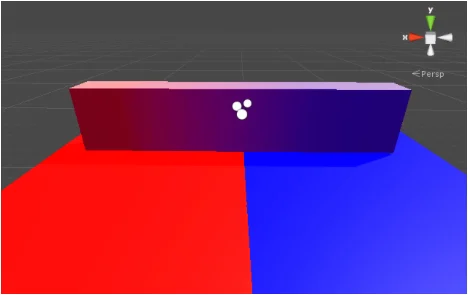
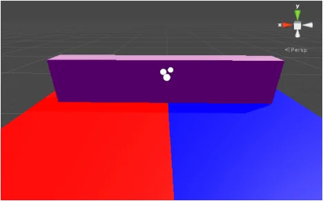
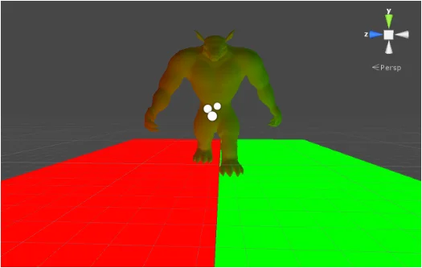
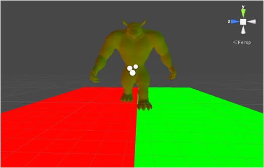

Important: The Built-In Render Pipeline is deprecated and will be made obsolete in a future release.
It remains supported, including bug fixes and maintenance, through the full Unity 6.7 LTS lifecycle.
For more information on migration, refer to Migrating from the Built-In Render Pipeline to the Universal Render Pipeline and Render pipeline feature comparison.
The Light Probe Proxy Volume (LPPV) component allows you to use more lighting information for large dynamic GameObjects that cannot use baked lightmaps (for example, large Particle Systems or skinned Meshes).
By default, a probe-lit Renderer receives lighting from a single Light ProbeLight probes store information about how light passes through space in your scene. A collection of light probes arranged within a given space can improve lighting on moving objects and static LOD scenery within that space. More info
See in Glossary that is interpolated between the surrounding Light Probes in the Scene. Because of this, GameObjects have constant ambient lighting across the surface. This lighting has a rotational gradient because it is using spherical harmonics, but it lacks a spatial gradient. This is more noticeable on larger GameObjects or Particle Systems. The lighting across the GameObject matches the lighting at the anchor point, and if the GameObject straddles a lighting gradient, parts of the GameObject may look incorrect.
The Light Probe Proxy Volume component generates a 3D grid of interpolated Light Probes inside a Bounding Volume. You can specify the resolution of this grid in the UI of the component. The spherical harmonics (SH) coefficients of the interpolated Light Probes are uploaded into 3D textures. The 3D textures containing SH coefficients are then sampled at render time to compute the contribution to the diffuse ambient lighting. This adds a spatial gradient to probe-lit GameObjects.
The Standard Shader supports this feature. To add this to a custom shader, use the ShadeSHPerPixel function. To learn how to implement this function, see the Particle System sample Shader code example at the bottom of this page.
See render pipeline feature comparison for more information about support for the Light Probe Proxy Volume component across render pipelines.
A simple Mesh Renderer using a Standard Shader:


A skinned Mesh Renderer using a Standard Shader:


The component requires at least Shader Model 4 graphics hardware and API support, including support for 3D Textures with 32-bit or 16-bit floating-point format and linear filtering.
To work correctly, the Scene needs to contain Light Probes via Light Probe GroupA component that enables you to add Light Probes to GameObjects in your scene. More info
See in Glossary components. If a requirement is not fulfilled, the Renderer or Light Probe Proxy Volume component Inspector displays a warning message.
LightProbeProxyVolume